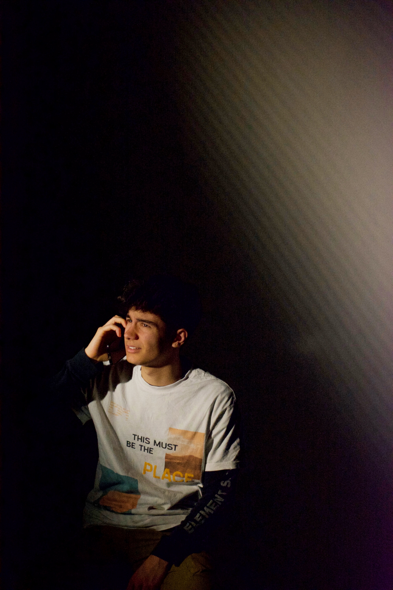

Sono un designer della comunicazione nato a Milano nel 2004, attualmente al secondo anno del corso triennale in Communication Design al Politecnico di Milano. Mi interessa il punto in cui la forma incontra il senso — dove una scelta tipografica cambia il significato di una parola, o dove un sistema visivo diventa un'esperienza prima ancora di essere letto.

Vengo da una famiglia di musicisti e architetti, e probabilmente è per questo che ho sviluppato un'ossessione per la struttura e per il ritmo — nel senso più ampio possibile. Il design per me è costruire sistemi che respirano: devono essere abbastanza rigidi da reggere, abbastanza aperti da sorprendere.
Al Politecnico sto esplorando editorial design, identità visiva e type design. Fuori dall'università fotografo, colleziono libri stampati in risografia e passo troppo tempo in trattorie che non hanno menu digitale.